대기환경기사 (2019-09-21 기출문제)
1과목: 대기오염 개론
1. 황산화물의 각종 영향에 대한 설명으로 옳지 않은 것은?
- 공기가 SO2를 함유하면 부식성이 강하게 된다.
- SO2는 대기 중의 분진과 반응하여 황산염이 형성됨으로써 대부분의 금속을 부식시킨다.
- 대기에서 형성되는 아황산 및 황산은 석회, 대리석, 각종 시멘트 등 건축재료를 약화시킨다.
- 황산화물은 대기 중 또는 금속의 표면에서 황산으로 변함으로써 부식성을 더욱 약하게 한다.
(정답률: 80%)

2. 다음과 같이 인체에 피해를 유발시킬 수 있는 오염물질로 가장 적합한 것은?
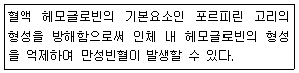
- 다이옥신
- 납
- 망간
- 바나듐
(정답률: 77%)
3. 다음 Dobson unit에 관한 설명 중 () 안에 알맞은 것은?
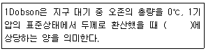
- 0.01mm
- 0.1mm
- 0.1cm
- 1cm
(정답률: 79%)
4. NOX 중 이산화질소에 관한 설명으로 옳지 않은 것은?
- 적갈색의 자극성을 가진 기체이며, NO보다 5~7배 정도 독성이 강하다.
- 분자량 46, 비중은 1.59 정도이다.
- 수용성이지만 NO보다는 수중 용해도가 낮으며 일명 웃음기체라고도 한다.
- 부식성이 강하고, 산화력이 크며, 생리적인 독성과 자극성을 유발할 수도 있다.
(정답률: 75%)
5. 오염물질이 식물에 미치는 영향에 대한 설명으로 가장 거리가 먼 것은?
- 오존은 0.2ppm 정도의 농도에서 2~3시간 접촉하면 피해를 일으키며, 보통 엽록소 파괴, 동화작용 억제, 산소작용의 저해 등을 일으킨다.
- 질소산화물은 엽록소가 갈색으로 되어 잎의 내부에 갈색 또는 흑갈색의 반점이 생기며, 담배, 해바라기, 진달래 등은 이산화질소에 대한 식물의 감수성이 약한 편이다.
- 양배추, 클로버, 상추 등은 에틸렌가스에 대해 저항성 식물이다.
- 보리, 목화 등은 아황산가스에 대해 저항성이 강한 식물이며, 까치밤나무, 쥐당나무 등은 저항성이 약한 식물에 해당한다.
(정답률: 66%)
6. 역전에 관한 설명으로 옳지 않은 것은?
- 복사역전층은 보통 가을로부터 봄에 걸쳐서 날씨가 좋고, 바람이 약하며, 습도가 적을 때 자정 이후 아침까지 잘 발생한다.
- 침강역전은 고기압 중심부분에서 기층이 서서히 침강하면서 기온이 단열변화로 승온되어 발생하는 현상이다.
- 전선역전층은 빠른 속도로 움직이는 경향이 있어서 오염문제에 심각한 영향을 주지는 않는 편이다.
- 해풍역전은 정체성 역전으로서 보통 오염물질은 오랫동안 정체시킨다.
(정답률: 69%)
7. 산란에 관한 설명으로 옳지 않은 것은?
- Rayleigh는 “맑은 하늘 또는 저녁노을은 공기 분자에 의한 빛의 산란에 의한 것”이라는 것을 발견하였다.
- 빛을 입자가 들어있는 어두운 상자 안으로 도입시킬 때 산란광이 나타나며 이것을 틴달빛(光)이라고 한다.
- Mie산란의 결과는 입사빛의 파장에 대하여 입자가 대단히 작은 경우에만 적용되는 반면, Rayleigh의 결과는 모든 입경에 대하여 적용한다.
- 입자에 빛이 조사될 때 산란의 경우, 동일한 파장의 빛이 여러 방향으로 다른 강도로 산란되는 반면, 흡수의 경우는 빛에너지가 열, 화학반응의 에너지로 변환된다.
(정답률: 74%)
8. 먼지의 농도가 0.075mg/m3인 지역의 상대습도가 70%일 때, 가시거리는? (단, 계수=1.2로 가정)
- 4km
- 16km
- 30km
- 42km
(정답률: 72%)
9. 다음 대기오염물질 중 바닷물의 물보라 등이 배출원이며, 1차 오염물질에 해당하는 것은?
- N2O3
- 알데하이드
- HCN
- NaCl
(정답률: 79%)
10. Fick의 확산방정식을 실제 대기에 적용시키기 위해 세우는 추가적인 가정으로 거리가 먼 것은?
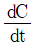
=0 이다.- 바람에 의한 오염물의 주이동방향은 x축으로 한다.
- 오염물질의 농도는 비점오염원에서 간헐적으로 배출된다.
- 풍속은 x, y, z 좌표 내의 어느 점에서든 일정하다.
(정답률: 74%)
11. 역사적인 대기오염사건에 관한 설명으로 옳은 것은?
- 포자리카 사건은 MIC에 의한 피해이다.
- 런던스모그 사건은 복사역전 형태였다.
- 뮤즈계곡 사건은 PAN이 주된 오염물질로 작용했다.
- 도쿄 요코하마 사건은 PCB가 주된 오염물질로 작용했다.
(정답률: 76%)
12. 최대혼합고도가 500m일 때 오염농도는 4ppm이었다. 오염농도가 500ppm일 때 최대혼합고도는 얼마인가?
- 50m
- 100m
- 200m
- 250m
(정답률: 59%)
13. 도시 대기오염물질 중 태양빛을 흡수하는 기체 중의 하나로서 파장 420nm 이상의 가시광선에 의해 광분해되는 물질로 대기 중 체류시간이 약 2~5일 정도인 것은?
- SO2
- NO2
- CO2
- RCHO
(정답률: 71%)
14. 가우시안 모델의 대기오염 확산방정식을 적용할 때 지면에 있는 오염원으로부터 바람부는 방향으로 200m 떨어진 연기의 중심축상 지상오염농도(mg/m3)는? (단, 오염물질의 배출량은 6g/s, 풍속은 3.5m/s, σy, σz는 각각 22.5m, 12m이다.)
- 0.96
- 1.41
- 2.02
- 2.46
(정답률: 56%)
15. 수용모델의 분석법에 관한 설명으로 옳지 않은 것은?
- 광학현미경은 입경이 0.01μm보다 큰 입자만을 대상으로 먼지의 형상, 모양 및 색깔별로 오염원을 구별할 수 있고, 미숙련 경험자도 쉽게 분석가능하다.
- 전자주사현미경은 광학현미경보다 작은 입자를 측정할 수 있고, 정성적으로 먼지의 오염원을 확인할 수 있다.
- 시계열분석법은 대기오염 제어의 기능을 평가하고 특정 오염원의 경향을 추적할 수 있으며, 타 방법을 통해 제시된 오염원을 확인하는 데 매우 유용한 정성적 분석법이다.
- 공간계열법은 시료채취기간 중 오염배출속도 및 기상학 등에 크게 의존하여 분산모델과 큰 연관성을 갖는다.
(정답률: 69%)
16. 오존에 관한 설명으로 옳지 않은 것은? (단, 대류권 내 오존 기준)
- 보통 지표오존의 배경농도는 1~2ppm 범위이다.
- 오존은 태양빛, 자동차 배출원인 질소산화물과 휘발성 유기화합물 등에 의해 일어나는 복잡한 광화학반응으로 생성된다.
- 오염된 대기 중 오존농도에 영향을 주는 것은 태양빛의 강도, NO2/NO의 비, 반응성 탄화수소농도 등이다.
- 국지적인 광화학스모그로 생성된 Oxidant의 지표물질이다.
(정답률: 78%)
17. 대기오염가스를 배출하는 굴뚝의 유효고도가 87m에서 100m로 높아졌다면 굴뚝의 풍하측 지상 최대 오염농도는 87m일 때의 것과 비교하면 몇 %가 되겠는가? (단, 기타 조건은 일정)
- 47%
- 62%
- 76%
- 88%
(정답률: 57%)
18. 다음 중 2차 대기오염물질에 해당하지 않는 것은?
- SO3
- H2SO4
- NO2
- CO2
(정답률: 66%)
19. 다음 특정물질 중 오존 파괴지수가 가장 큰 것은?
- Halon-1211
- Halon-1301
- CCl4
- HCFC-22
(정답률: 77%)
20. 벤젠에 관한 설명으로 옳지 않은 것은?
- 체내에 흡수된 벤젠은 지방이 풍부한 피하조직과 골수에서 고농도로 축적되어 오래 잔존할 수 있다.
- 체내에서 마뇨산(hippuric acid)으로 대사하여 소변으로 배설된다.
- 비점은 약 80℃정도이고, 체내 흡수는 대부분 호흡기를 통하여 이루어진다.
- 벤젠 폭로에 의해 발생되는 백혈병은 주로 급성 골수아성 백혈병(acute myeloblastic leukemia)이다.
(정답률: 77%)
2과목: 연소공학
21. 화격자 연소로에서 석탄은 연소시킬 경우 화염이동속도에 대한 설명으로 옳지 않은 것은?
- 입경이 작을수록 화염이동속도는 커진다.
- 발열량이 높을수록 화염이동속도는 커진다.
- 공기온도가 높을수록 화염이동속도는 커진다.
- 석탄화도가 높을수록 화염이동속도는 커진다.
(정답률: 53%)
22. 연료의 특성에 대한 설명 중 옳은 것은?
- 석탄의 비중은 탄화도가 진행될수록 작아진다.
- 중유의 비중이 클수록 유동점과 잔류탄소는 감소한다.
- 중유 중 잔류탄소의 함량이 많아지면 점도가 낮아진다.
- 메탄은 프로판에 비해 이론공기량이 적다.
(정답률: 63%)
23. 정상연소에서 연소속도를 지배하는 요인으로 가장 적합한 것은?
- 연료 중의 불순물 함유량
- 연료 중의 고정탄소량
- 공기 중의 산소의 확산속도
- 배출가스 중의 N2 농도
(정답률: 62%)
24. 휘발유, 등유, 알코올, 벤젠 등 액체연료의 연소방식에 해당하는 것은?
- 자기연소
- 확산연소
- 증발연소
- 표면연소
(정답률: 75%)
25. 다음은 연료의 분류에 관한 설명이다. ()안에 들어갈 가장 적합한 것은?
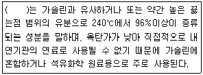
- 나프타
- 등유
- 경유
- 중유
(정답률: 72%)
26. 중유조성이 탄소 87%, 수소 11%, 황 2%이었다면 이 중유연소에 필요한 이론 습연소가스량(Sm3/kg)은?
- 9.63
- 11.35
- 13.63
- 15.62
(정답률: 58%)
27. 목재, 석탄, 타르 등 연소초기에 가연성 가스가 생성되고 긴 화염이 발생되는 연소의 형태는?
- 표면연소
- 분해연소
- 증발연소
- 확산연소
(정답률: 51%)
28. 분무연소기의 자동제어 방법인 시퀀스제어(순차제어, sequential control)에 관한 설명으로 가장 거리가 먼 것은?
- 안전장치가 따로 필요 없다.
- 분무연소기의 자동점화, 자동소화, 연소량 자동제어 등이 행해진다.
- 화염이 꺼진 경우 화염검출기가 소화를 검출하고, 점화플러그를 다시 작동시킨다.
- 지진에 의해서 감지기가 작동하면 연료 개폐 밸브가 닫힌다.
(정답률: 70%)
29. 유동층 연소에 관한 설명으로 거리가 먼 것은?
- 사용연료의 입도범위가 넓기 때문에 연료를 미분쇄 할 필요가 없다.
- 비교적 고온에서 연소가 행해지므로 열생성 NOx가 많고, 전열관의 부식이 문제가 된다.
- 연료의 층내 체류시간이 길어 저발열량의 석탄도 완전연소가 가능하다.
- 유동매체에 석회석 등의 탈황제를 사용하여 로내 탈황도 가능하다.
(정답률: 50%)
30. COM(coal oil mixture, 혼탄유) 연소에 관한 설명으로 옳지 않은 것은?
- COM은 주로 석탄과 중유의 혼합연료이다.
- 연소실내 체류시간의 부족, 분사변의 폐쇄와 마모 등 주의가 요구된다.
- 재의 처리가 용이하고, 중유 전용 보일러의 연료로서 개조 없이 COM을 효율적으로 이용할 수 있다.
- 중유보다 미립화 특성이 양호하다.
(정답률: 62%)
31. 옥탄가에 대한 설명으로 옳지 않은 것은?
- n-Paraffine에서는 탄소수가 증가할수록 옥탄가는 저하하여 C7에서 옥탄가는 0이다.
- 방향족 탄화수소의 경우 벤젠고리의 측쇄가 C3까지는 옥탄가가 증가하지만 그 이상이면 감소한다.
- Naphthene계는 방향족 탄화수소보다는 옥탄가가 작지만 n-Paraffine계보다는 큰 옥탄가를 가진다.
- iso-Paraffine에서는 methyl 가지가 적을수록, 중앙에 집중하지 않고 분산될수록 옥탄가가 증가한다.
(정답률: 68%)
32. 내용적 160m3의 밀폐된 실내에서 2.23kg의 부탄을 완전연소할 때, 실내에서의 산소농도(V/V, %)는? (단, 표준상태, 기타조건은 무시하며, 공기 중 용적산소비율은 21%)
- 15.6%
- 17.5%
- 19.4%
- 20.8%
(정답률: 37%)
33. 연소가스 분석결과 CO2는 17.5%, O2는 7.5%일 때 (CO2)max(%)는?
- 19.6
- 21.6
- 27.2
- 34.8
(정답률: 52%)
34. 액체연료의 연소용 버너 중 유량의 조절범위가 일반적으로 가장 큰 것은?
- 저압기류분무식 버너
- 회전식 버너
- 고압기류분무식 버너
- 유압분무식 버너
(정답률: 64%)
35. 다음 중 그을음이 잘 발생하기 쉬운 연료순으로 나열한 것은? (단, 쉬운 연료＞어려운 연료)
- 타르＞중유＞석탄가스＞LPG
- 석탄가스＞LPG＞타르＞중유
- 중유＞LPG＞석탄가스＞타르
- 중유＞타르＞LPG＞석탄가스
(정답률: 72%)
36. 미분탄 연소의 특징으로 거리가 먼 것은?
- 스토커 연소에 비해 작은 공기비로 완전연소가 가능하다.
- 사용연료의 범위가 넓고, 스토커 연소에 적합하지 않은 점결탄과 저발열량탄 등도 사용 가능하다.
- 부하변동에 쉽게 적용할 수 있다.
- 설비비와 유지비가 적게 들고, 재비산의 염려가 없으며, 별도설비가 불필요하다.
(정답률: 65%)
37. 고압기류분무식 버너에 관한 설명으로 옳지 않은 것은?
- 2~8kg/cm2의 고압공기를 사용하여 연료유를 분무화 시키는 방식이다.
- 분무각도는 30°정도, 유량조절비는 1:10정도이다.
- 분무에 필요한 1차 공기량은 이론공기량의 80~90% 범위이다.
- 연료유의 점도가 커도 분무화가 용이하나 연소 시 소음이 큰 편이다.
(정답률: 54%)
38. 가연한계에 대한 설명으로 옳지 않은 것은?
- 일반적으로 가연한계는 산화제 중의 산소분율이 커지면 넓어진다.
- 파라핀계 탄화수소의 가연범위는 비교적 좁다.
- 기체연료는 압력이 증가할수록 가연한계가 넓어지는 경향이 있다.
- 혼합기체의 온도를 높게 하면 가연범위는 좁아진다.
(정답률: 52%)
39. 저 NOx 연소기술 중 배가스 순환기술에 관한 설명으로 거리가 먼 것은?
- 일반적으로 배기가스 재순환비율은 연소공기 대비 10~20%에서 운전된다.
- 희석에 의한 산소농도 저감효과보다는 화염온도 저하효과가 작기 때문에, 연료 NOx보다는 고온 NOx 억제효과가 작다.
- 장점으로 대부분의 다른 연소제어기술과 병행해서 사용할 수 있다.
- 저 NOx 버너와 같이 사용하는 경우가 많다.
(정답률: 62%)
40. 착화점이 낮아지는 조건으로 거리가 먼 것은?
- 산소의 농도는 낮을수록
- 반응활성도는 클수록
- 분자의 구조는 복잡할수록
- 발열량은 높을수록
(정답률: 57%)
3과목: 대기오염 방지기술
41. 악취물질의 성질과 발생원에 관한 설명으로 가장 거리가 먼 것은?
- 에틸아민(C2H5NH2)은 암모니아취 물질로 수산가공, 약품제조 시에 발생한다.
- 메틸머캡탄(CH3SH)은 부패양파취 물질로 석유정제, 가스제조, 약품제조 시에 발생한다.
- 황화수소(H2S)는 썩는 계란취 물질로 석유정제, 약품제조 시에 발생한다.
- 아크로레인(CH2CHCHO)은 생선취 물질로 하수처리장, 축산업에서 발생한다.
(정답률: 65%)
42. 각 집진장치의 특징에 관한 설명으로 옳지 않은 것은?
- 여과집진장치에서 여포는 가스온도가 350℃를 넘지 않도록 하여야 하며, 고온가스를 냉각시킬 때에는 산노점 이하로 유지해야 한다.
- 전기집진장치는 낮은 압력손실로 대량의 가스처리에 적합하다.
- 제트스크러버는 처리가스량이 많은 경우에는 잘 쓰지 않는 경향이 있다.
- 중력집진장치는 설치면적이 크고 효율이 낮아 전처리설비로 주로 이용되고 있다.
(정답률: 60%)
43. 배출가스 중 먼지농도가 3200mg/Sm3인 먼지처리를 위해 집진율이 각각 60%, 70%, 75%인 중력집진장치, 원심력집진장치, 세정집진장치를 직렬로 연결해서 사용해왔다. 여기에 집진장치 하나를 추가로 직렬 연결하여 최종 배출구 먼지농도를 20mg/Sm3이하로 줄이려면, 추가 집진장치의 집진율은 최소 몇 %가 되어야 하는가?
- 약 79.2%
- 약 85.6%
- 약 89.6%
- 약 92.4%
(정답률: 47%)
44. 복합 국소배기장치에서 댐퍼조절평형법(또는 저항조절평형법)의 특징으로 옳지 않은 것은?
- 오염물질 배출원이 많아 여러 개의 가지덕트를 주덕트에 연결할 필요가 있는 경우 사용한다.
- 덕트의 압력손실이 큰 경우 주로 사용한다.
- 작업 공정에 따른 덕트의 위치 변경이 가능하다.
- 설치 후 송풍량 조절이 불가능하다.
(정답률: 61%)
45. 유해가스 처리를 위한 흡수액의 구비조건으로 거리가 먼 것은?
- 용해도가 커야 한다.
- 휘발성이 적어야 한다.
- 점성이 커야 한다.
- 용매의 화학적 성질과 비슷해야 한다.
(정답률: 67%)
46. 탈황과 탈질 동시제어 공정으로 거리가 먼 것은?
- SCR공정
- 전자빔공정
- NOXSO공정
- 산화구리공정
(정답률: 51%)
47. 선택적 촉매환원법과 선택적 비촉매환원법으로 주로 제거하는 오염물질은?
- 휘발성유기화합물
- 질소산화물
- 황산화물
- 악취물질
(정답률: 63%)
48. 벤츄리 스크러버 적용 시 액가스비를 크게 하는 요인으로 옳지 않은 것은?
- 먼지의 친수성이 클 때
- 먼지의 입경이 작을 때
- 처리가스의 온도가 높을 때
- 먼지의 농도가 높을 때
(정답률: 69%)
49. 사이클론에서 가스 유입속도를 2배로 증가시키고, 입구폭을 4배로 늘리면 50%효율로 집진되는 입자의 직경, 즉 Lapple의 절단입경(dp50)은 처음에 비해 어떻게 변화되겠는가?
- 처음의 2배
- 처음의 √2배
- 처음의 1/2
- 처음의 1/√2
(정답률: 52%)
50. 벤츄리 스크러버에 관한 설명으로 가장 적합한 것은?
- 먼지부하 및 가스유동에 민감하다.
- 집진율이 낮고 설치 소요면적이 크며, 가압수식 중 압력손실이 매우 크다.
- 액가스비가 커서 소량이 세정액이 요구된다.
- 점착성, 조해성 먼지처리 시 노즐막힘 현상이 현저하여 처리가 어렵다.
(정답률: 44%)
51. 전기집진장치의 장해현상 중 2차 전류가 현저하게 떨어질 때의 원인 또는 대책에 관한 설명으로 거리가 먼 것은?
- 분진의 농도가 너무 높을 때 발생한다.
- 대책으로는 스파크의 횟수를 늘리는 방법이 있다.
- 대책으로는 조습용 스프레이의 수량을 늘리는 방법이 있다.
- 분진의 비저항이 비정상적으로 낮을 때 발생하며, CO를 주입시킨다.
(정답률: 64%)
52. 유해물질을 함유하는 가스와 그 제거장치의 조합으로 거리가 먼 것은?
- 시안화수소 함유 가스-물에 의한 세정
- 사불화규소 함유 가스-충전탑
- 벤젠 함유 가스-촉매연소법
- 삼산화인 함유 가스-표면적이 충분히 넓은 충전물을 채운 흡수탑 안에서 알칼리성 용액에 의한 흡수제거
(정답률: 44%)
53. 흡수탑의 충전물에 요구되는 사항으로 거리가 먼 것은?
- 단위 부피 내의 표면적이 클 것
- 간격의 단면적이 클 것
- 단위 부피의 무게가 가벼울 것
- 가스 및 액체에 대하여 내식성이 없을 것
(정답률: 55%)
54. 석유정제 시 배출되는 H2S의 제거에 사용되는 세정제는?
- 암모니아수
- 사염화탄소
- 다이에탄올아민 용액
- 수산화칼슘 용액
(정답률: 52%)
55. 후드 설계 시 고려사항으로 옳지 않은 것은?
- 잉여공기의 흡입을 적게 하고 충분한 포착속도를 가지기 위해 가능한 한 후드를 발생원에 근접시킨다.
- 분진을 발생시키는 부분을 중심으로 국부적으로 처리하는 로컬 후드방식을 취한다.
- 후드 개구면의 중앙부를 열어 흡입풍량을 최대한 늘리고, 포착속도를 최소한으로 작게 유지한다.
- 실내의 기류, 발생원과 후드 사이의 장애물 등에 의한 영향을 고려하여 필요에 따라 에어커튼을 이용한다.
(정답률: 68%)
56. 다음 입경측정법에 해당하는 것은?
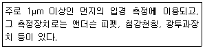
- 표준체 측정법
- 관성충돌법
- 공기투과법
- 액상 침강법
(정답률: 52%)
57. 배출가스 내의 황산화물 처리방법 중 건식법의 특징으로 가장 거리가 먼 것은? (단, 습식법과 비교)
- 장치의 규모가 큰 편이다.
- 반응효율이 높은 편이다.
- 배출가스의 온도 저하가 거의 없는 편이다.
- 연돌에 의한 배출가스의 확산이 양호한 편이다.
(정답률: 50%)
58. 입자상 물질과 NOx 저감을 위한 디젤엔진 연료분사시스템의 적용기술로 가장 거리가 먼 것은?
- 분사압력 저압화
- 분사압력 최적제어
- 분사율 제어
- 분사시기 제어
(정답률: 56%)
59. 펄스젯 여과집진기에서 압축공기량 조절장치와 가장 관련이 깊은 것은?
- 확산관(diffuser tube)
- 백케이지(bag cage)
- 스크레이퍼(scraper)
- 방전극(discharge electrode)
(정답률: 49%)
60. 밀도 0.8g/cm3인 유체의 동점도가 3Stokes이라면 절대점도는?
- 2.4 poise
- 2.4 centi poise
- 2400 poise
- 2400 centi poise
(정답률: 53%)
4과목: 대기오염 공정시험기준(방법)
61. 흡광차분광법(DOAS)의 원리와 적용범위에 관한 설명으로 거리가 먼 것은?
- 50~1000m 정도 떨어진 곳의 빛의 이동경로(Path)를 통과하는 가스를 실시간으로 분석할 수 있다.
- 아황산가스, 질소산화물, 오존 등의 대기 오염물질 분석에 적용할 수 있다.
- 측정에 필요한 광원은 180~380nm 파장을 갖는 자외선램프를 사용한다.
- 흡광광도법의 기본 원리인 Beer-Lambert 법칙을 응용하여 분석한다.
(정답률: 64%)
62. 환경대기 중의 옥시던트 측정법에 사용되는 용어의 설명으로 옳지 않은 것은?
- 옥시던트는 전옥시던트, 광화학 옥시던트, 오존 등의 산화성물질의 총칭을 말한다.
- 전옥시던트는 중성요오드화 칼륨용액에 의해 요오드를 유리시키는 물질을 총칭한다.
- 광화학옥시던트는 전옥시던트에서 오존을 제외한 물질이다.
- 제로가스는 측정기의 영점을 교정하는데 사용하는 교정용 가스이다.
(정답률: 53%)
63. 자기분광광전광도계를 사용하여 과망간산포타슘 용액(20~60mg/L)의 흡수곡선을 작성할 경우 다음 중 흡광도 값이 최대가 나오는 파장의 범위는?
- 350~400nm
- 400~450nm
- 500~550nm
- 600~650nm
(정답률: 46%)
64. 메틸렌블루법은 배출가스 중 어떤 물질을 측정하기 위한 방법인가?
- 황화수소
- 불화수소
- 염화수소
- 시안화수소
(정답률: 50%)
65. 원형굴뚝의 직경이 4.3m이었다. 굴뚝 배출가스 중의 먼지 측정을 위한 측정점수는 몇 개로 하여야 하는가?
- 12
- 16
- 20
- 24
(정답률: 61%)
66. 이온크로마토그래피에서 사용되는 써프렛서에 관한 설명으로 옳지 않은 것은?
- 관형과 이온교환막형이 있다.
- 용리액으로 사용되는 전해질 성분을 분리검출 하기 위하여 분리관 앞에 병렬로 접속시킨다.
- 관형 써프렛서 중 음이온에는 스티롤계 강산형(H+)수지가 충진된 것을 사용한다.
- 전해질을 물 또는 저전도의 용매로 바꿔줌으로써 전기 전도도 셀에서 목적이온성분과 전기 전도도만을 고감도로 검출할 수 있게 해준다.
(정답률: 59%)
67. 시험분석에 사용하는 용어 및 기재사항에 관한 설명으로 옳지 않은 것은?
- “약”이란 그 무게 또는 부피에 대하여 ±10% 이상의 차가 있어서는 안된다.
- “정확히 단다”라 함은 규정한 양의 검체를 취하여 분석용 저울로 0.1mg까지 다는 것을 뜻한다.
- “항량이 될 때까지 건조한다 또는 강열한다”라 함은 따로 규정이 없는 한 보통의 건조방법으로 30분간 더 건조 또는 강열할 때 전후 무게의 차가 0.3mg 이하일 때를 뜻한다.
- 액체성분의 양을 “정확히 취한다”라 함은 홀피펫, 눈금플라스크 또는 이와 동등이상의 정도를 갖는 용량계를 사용하여 조작하는 것을 뜻한다.
(정답률: 57%)
68. 환경대기 중에 있는 아황산가스 농도를 자동연속측정법으로 분석하고자 한다. 이에 해당하지 않는 것은?
- 적외선형광법
- 용액전도율법
- 흡광차분광법
- 불꽃광도법
(정답률: 50%)
69. 소각로, 소각시설 및 그 밖의 배출원에서 배출되는 입자상 및 가스상 수은(Hg)의 측정ㆍ분석방법 중 냉증기 원자흡수분광광도법에 관한 설명으로 옳지 않은 것은?(관련 규정 개정전 문제로 여기서는 기존 정답인 2번을 누르면 정답 처리됩니다. 자세한 내용은 해설을 참고하세요.)
- 배출원에서 등속으로 흡입된 입자상과 가스상 수은은 흡수액인 상성 과망간산포타슘 용액에 채취된다.
- 정량범위는 0.0⑤mg/m3~0.075mg/m3이고, (건조시료가스량 1m3인 경우), 방법검출한계는 0.003mg/m3이다.
- Hg2+ 형태로 채취한 수은을 Hg0 형태로 환원시켜서 측정한다.
- 시료채취 시 배출가스 중에 존재하는 산화 유기물질은 수은의 채취를 방해할 수 있다.
(정답률: 53%)
70. 굴뚝 배출가스 중 시안화수소를 피리딘 피라졸론법으로 분석할 경우 시안화수소 표준원액을 제조하기 위해서는 시안화 수소 용액 몇 mL를 취하여 수산화소듐용액(1N) 100mL를 가하고 다시 물로 전량을 1L로 하여야 하는가? (단, 시안화 수소 표준원액 1mL는 기체상 HCN 0.01mL(0℃, 760mmHg)에 상당하며, f:0.1 N 질산은 용액의 역가, a:0.1 N 질산은 용액의 소비량 (mL))(관련 규정 개정전 문제로 여기서는 기존 정답인 2번을 누르면 정답 처리됩니다. 자세한 내용은 해설을 참고하세요.)
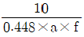
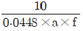
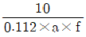
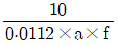
(정답률: 52%)
71. 원자흡수분광광도법에서 사용하는 용어 설명으로 거리가 먼 것은?
- 공명선(Resonance Line):원자가 외부로 빛을 반사했다가 방사하는 스펙트럼선
- 근접선(Neighbouring Line):목적하는 스펙트럼선에 가까운 파장을 갖는 다른 스펙트럼선
- 역화(Flame Back):불꽅의 연소속도가 크고 혼합기체의 분출속도가 작을 때 연소형상이 내부로 옮겨지는 것
- 원자흡광(분광)측광:원자흡광스펙트럼을 이용하여 시료중의 특정원소의 농도와 그 휘선의 흡광정도와의 상관관계를 측정하는 것
(정답률: 62%)
72. 굴뚝 배출가스 중 산소를 오르자트(Orsat) 분석법(화학분석법)으로 시료의 흡수를 통해 시료 중 산소농도를 구하고자 할 때, 장치 내의 흡수액을 넣은 흡수병에 가장 먼저 흡수되는 가스 성분은?(관련 규정 개정전 문제로 여기서는 기존 정답인 1번을 누르면 정답 처리됩니다. 자세한 내용은 해설을 참고하세요.)
- CO2(탄산가스)
- O2(산소)
- CO(일산화탄소)
- N2(질소)
(정답률: 55%)
73. 다음 원자흡수분광광도법의 측정순서 중 일반적으로 가장 먼저 하여야 하는 것은?
- 분광기의 파장눈금을 분석선의 파장에 맞춘다.
- 광원램프를 점등하여 적당한 전류값으로 설정한다.
- 가스유량 조절기의 밸브를 열어 불꽃을 점화한다.
- 시료용액을 불꽃 중에 분무시켜 지시한 값을 읽어 둔다.
(정답률: 53%)
74. 배출허용기준 중 표준산소농도를 적용받는 항목에 대한 배출가스유량 보정식으로 옳은 것은? (단, Q:배출가스유량(Sm3/일), Qa:실측배출가스유량(Sm3/일), Oa:실측산소농도(%), Os:표준산소농도(%))
- Q=Qa×[(21-Os)/(21-Oa)]
- Q=Qa÷[(21-Os)/(21-Oa)]
- Q=Qa×[(21+Os)/(21+Oa)]
- Q=Qa÷[(21+Os)/(21+Oa)]
(정답률: 61%)
75. 특정발생원에서 일정한 굴뚝을 거치지 않고 외부로 비산되는 먼지를 고용량공기시료채취법으로 측정한 결과 다음과 같은 자료를 얻었다. 이 때 비산먼지의 농도는 몇 mg/m3인가?
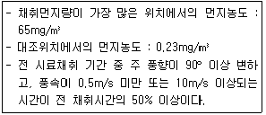
- 117
- 102
- 94
- 87
(정답률: 49%)
76. 환경대기 중 위상차현미경을 사용한 석면시험방법과 그 용어의 설명으로 옳지 않은 것은?
- 위상차 현미경은 굴절율 또는 두께가 부분적으로 다른 무색투명한 물체의 각 부분의 투과광 사이에 생기는 위상차를 화상면에서 명암의 차로 바꾸어, 구조를 보기 쉽도록 한 현미경이다.
- 석면먼지의 농도표시는 0℃, 760mmH2O의 기체 1μℓ 중에 함유된 석면섬유의 개수(개/μℓ)로 표시한다.
- 대기 중 석면은 강제 흡인 장치를 통해 여과장치에 채취한 후 위상차현미경으로 계수하여 석면 농도를 산출한다.
- 위상차현미경을 사용하여 섬유상으로 보이는 입자를 계수하고 같은 입자를 보통의 생물현미경으로 바꾸어 계수하여, 그 계수치들의 차를 구하면 굴절율이 거의 1.5인 섬유상의 입자 즉 석면이라고 추정할 수 있는 입자를 계수할 수가 있게 된다.
(정답률: 53%)
77. 대기오염공정시험기준상 따로 규정이 없는 한 “시약 명칭-화학식-농도(%)-비중(약)” 기준으로 옳은 것은?
- 암모니아수-NH4OH-30.0~34.0(NH3로서)-1.⑤
- 아이오드화수소산-HI-46.0~48.0-1.25
- 브롬화수소산-HBr-47.0~49.0-1.48
- 과염소산-H2ClO3-60.0~62.0-1.34
(정답률: 50%)
78. 비분산적외선분광분석법(Non Dispersive Infrared Photometer Analysis)에서 사용되는 용어에 관한 설명으로 옳지 않은 것은?
- 비교가스는 시료셀에서 적외선 흡수를 측정하는 경우 대조가스로 사용하는 것으로 적외선을 흡수하지 않는 가스를 말한다.
- 비교셀을 시료셀과 동일한 모양을 가지며 아르곤 또는 질소와 같은 불활성 기체를 봉입하여 사용한다.
- 광학필터는 시료광속과 비교광속을 일정주기로 단속시켜, 광학적으로 변조시키는 것으로 단속방식에는 1~20Hz의 교호단속 방식과 동시단속 방식이 있다.
- 시료셀은 시료가스가 흐르는 상태에서 양단의 창을 통해 시료광속이 통과하는 구조를 갖는다.
(정답률: 44%)
79. 기체크로마토그래피에 의한 정량분석에서 이용되는 정량법으로 거리가 먼 것은?
- 표준넓이추가법
- 보정넓이 백분율법
- 상대검정곡선법
- 절대검정곡선법
(정답률: 53%)
80. 다음 중 현행 대기오염공정시험기준상 일반적으로 자외선/가시선분광법으로 분석하지 않는 물질은?
- 배출가스 중 이황화탄소
- 유류 중 황유량
- 배출가스 중 황화수소
- 배출가스 중 불소화합물
(정답률: 53%)
5과목: 대기환경관계법규
81. 다음은 대기환경보전법상 과징금 처분기준이다. ()안에 알맞은 것은?
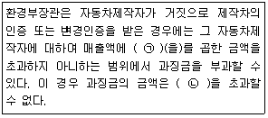
- ㉠ 100분의 3, ㉡ 100억원
- ㉠ 100분의 3, ㉡ 500억원
- ㉠ 100분의 5, ㉡ 100억원
- ㉠ 100분의 5, ㉡ 500억원
(정답률: 46%)
82. 실내공기질 관리볍규상 자일렌 항목의 신축공동주택의 실내공기질 권고기준은?
- 30μg/m3 이하
- 210μg/m3 이하
- 300μg/m3 이하
- 700μg/m3 이하
(정답률: 60%)
83. 대기환경보전법규상 배출시설 및 방지시설 등과 관련된 행정처분기준 중 “부식ㆍ마모로 인하여 대기오염물질이 누출되는 배출시설을 정당한 사유 없이 방치한 경우”의 3차 행정처분기준은?
- 개선명령
- 경고
- 조업정지 10일
- 조업정지 30일
(정답률: 49%)
84. 다음은 대기환경보전법규상 “초미세먼지(PM-2.5)"의 주의보 발령기준이다. ()안에 알맞은 것은?
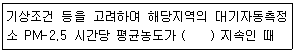
- 50μg/m3 이상 1시간 이상
- 50μg/m3 이상 2시간 이상
- 75μg/m3 이상 1시간 이상
- 75μg/m3 이상 2시간 이상
(정답률: 42%)
85. 다음은 대기환경보전법령상 부과금의 납부통지 기준에 관한 사항이다. ()안에 알맞은 것은?
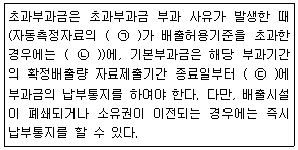
- ㉠ 30분 평균치, ㉡ 매 분기 종료일부터 30일 이내, ㉢ 30일 이내
- ㉠ 30분 평균치, ㉡ 매 반기 종료일부터 60일 이내, ㉢ 60일 이내
- ㉠ 1시간 평균치, ㉡ 매 분기 종료일부터 30일 이내, ㉢ 30일 이내
- ㉠ 1시간 평균치, ㉡ 매 반기 종료일부터 60일 이내, ㉢ 60일 이내
(정답률: 41%)
86. 대기환경보전법규상 운행차 배출허용기준에 관한 설명으로 옳지 않은 것은?
- 휘발유와 가스를 같이 사용하는 자동차의 배출가스 측정 및 배출허용기준은 가스의 기준을 적용한다.
- 알코올만 사용하는 자동차는 탄화수소 기준을 적용한다.
- 건설기계 중 덤프트럭, 콘크리트믹서트럭, 콘크리트펌프트럭에 대한 배출허용기준은 화물자동차기준을 적용한다.
- 수입자동차는 최초등록일자를 제작일자로 본다.
(정답률: 58%)
87. 대기환경보전법상 해당 연도의 평균 배출량이 평균 배출허용기준을 초과하여 그에 따른 상환명령을 이행하지 아니하고 자동차를 제작한 자에 대한 벌칙기준은?
- 7년 이하의 징역이나 1억원 이하의 벌금
- 5년 이하의 징역이나 5천만원 이하의 벌금
- 3년 이하의 징역이나 3천만원 이하의 벌금
- 1년 이하의 징역이나 1천만원 이하의 벌금
(정답률: 58%)
88. 대기환경보전법규상 자동차 종류 구분기준 중 전기만을 동력으로 사용하는 자동차로서 1회 충전 주행거리가 80km 이상 160km 미만에 해당하는 것은?
- 제1종
- 제2종
- 제3종
- 제4종
(정답률: 62%)
89. 대기환경보전법규상 자가측정 시 사용한 여과지 및 시료채취기록지의 보존기간은 환경오염공정시험기준에 따라 측정한 날부터 얼마로 하는가?
- 3개월
- 6개월
- 1년
- 3년
(정답률: 60%)
90. 대기환경보전법규상 위임업무 보고사항 중 “자동차 연료 및 첨가제의 제조ㆍ판매 또는 사용에 대한 규제현황”의 보고 횟수 기준은?
- 연 1회
- 연 2회
- 연 4회
- 수시
(정답률: 62%)
91. 대기환경보전법상 환경부장관은 대기오염물질과 온실가스를 줄여 대기환경을 개선하기 위하여 대기환경개선 종합계획을 몇 년마다 수립하여 시행하여야 하는가?
- 1년마다
- 3년마다
- 5년마다
- 10년마다
(정답률: 54%)
92. 대기환경보전법규상 대기오염방지시설과 가장 거리가 먼 것은? (단, 그 밖의 경우 등은 제외)
- 산화ㆍ환원에 의한 시설
- 응축에 의한 시설
- 미생물을 이용한 처리시설
- 이온교환시설
(정답률: 52%)
93. 대기환경보전법령상 초과부과금 산정기준에서 다음 중 오염물질 1킬로그램 당 부과금액이 가장 적은 것은?
- 이황화탄소
- 암모니아
- 황화수소
- 불소화물
(정답률: 53%)
94. 실내공기질 관리법상 다중이용시설을 설치하는 자는 환경부령으로 정한 기준을 초과한 오염물질방출 건축자재를 사용해서는 안 되는데, 이 규정을 위반하여 사용한 자에 대한 벌칙기준으로 옳은 것은?
- 1년 이하의 징역 또는 1천만원 이하의 벌금
- 500만원 이하의 과태료
- 200만원 이하의 과태료
- 100만원 이하의 과태료
(정답률: 52%)
95. 대기환경보전법령상 특별대책지역에서 환경부령에 따라 신고해야 하는 휘발성유기화합물 배출시설 중 “대통령령으로 정하는 시설”에 해당하지 않는 것은? (단, 그 밖에 휘발성유기화합물을 배출하는 시설로서 환경부장관이 관계중앙행정기관의 장과 협의하여 고시하는 시설 등은 제외한다.)
- 저유소의 저장시설 및 출하시설
- 주유소의 저장시설 및 출하시설
- 석유정제를 위한 제조시설, 저장시설, 출하시설
- 휘발성유기화합물 분석을 위한 실험실
(정답률: 59%)
96. 환경정책기본법령상 환경기준으로 옳은 것은? (단, ㉠, ㉡은 대기환경기준, ㉢, ㉣은 수질 및 수생태계 ‘하천’에서의 사람의 건강보호기준)
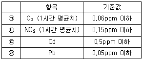
- ㉠
- ㉡
- ㉢
- ㉣
(정답률: 42%)
97. 다음 중 대기환경보전법령상 3종사업장 분류기준에 속하는 것은?
- 대기오염물질발생량의 합계가 연간 9톤인 사업장
- 대기오염물질발생량의 합계가 연간 12톤인 사업장
- 대기오염물질발생량의 합계가 연간 22톤인 사업장
- 대기오염물질발생량의 합계가 연간 33톤인 사업장
(정답률: 64%)
98. 다음은 대기환경보전법상 용어의 뜻이다. ()안에 알맞은 것은?
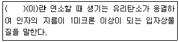
- 스모그
- 안개
- 검댕
- 먼지
(정답률: 69%)
99. 대기환경보전법령상 일일 기준초과배출량 및 일일유량의 산정방법으로 옳지 않은 것은?
- 특정대기유해물질의 배출허용기준초과 일일오염물질배출량은 소수점 이하 셋째 자리까지 계산하고, 일반오염물질은 소수점 이하 둘째 자리까지 계산한다.
- 먼지의 배출농도 단위는 표준상태(0℃, 1기압을 말한다.)에서의 세제곱미터당 밀리그램(mg/Sm3)으로 한다.
- 측정유량의 단위는 시간당 세제곱미터(m3/h)로 한다.
- 일일조업시간은 배출량을 측정하기 전 최근 조업한 30일 동안의 배출시설 조업시간 평균치를 시간으로 표시한다.
(정답률: 56%)
100. 악취방지법상 악취방지계획에 따라 악취방지에 필요한 조치를 하지 아니하고 악취배출시설을 가동한 자에 대한 벌칙기준으로 옳은 것은?
- 1천만원 이하의 벌금
- 500만원 이하의 벌금
- 300만원 이하의 벌금
- 100만원 이하의 벌금
(정답률: 55%)